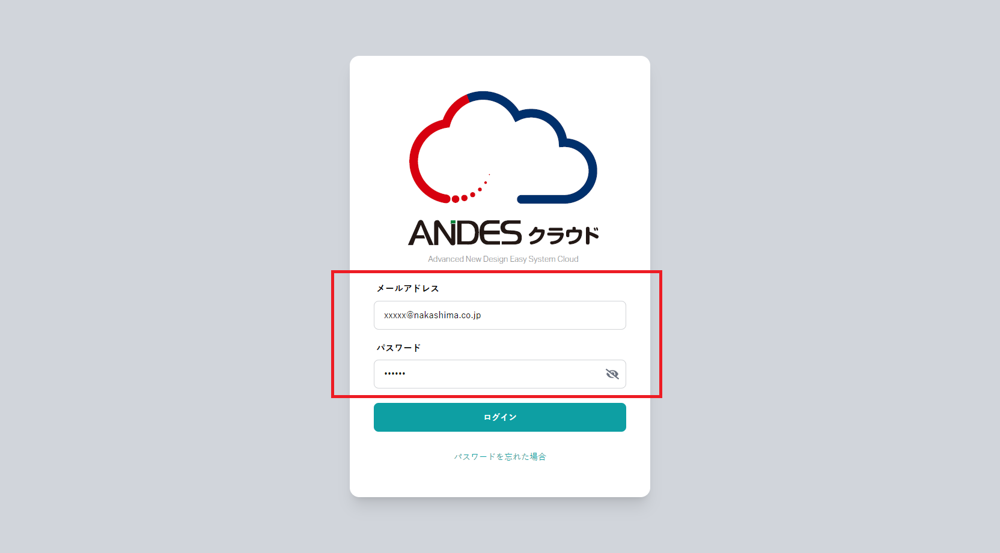
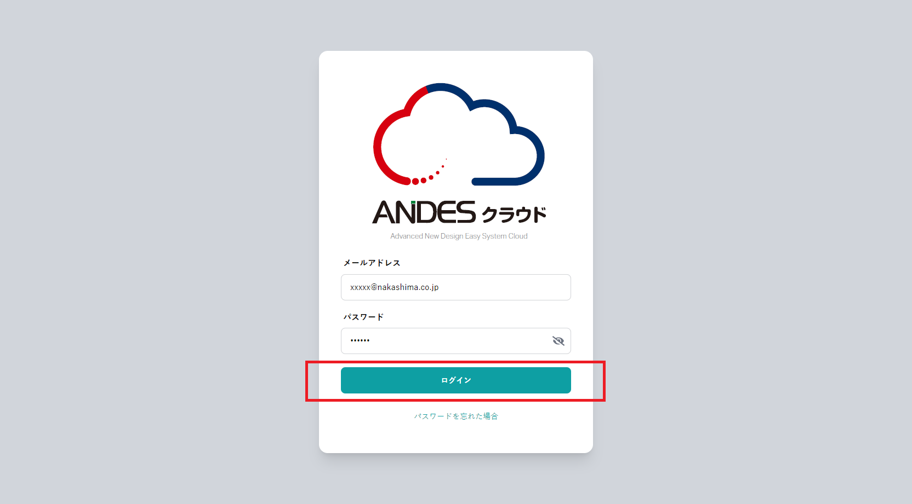

注意
【ANDESクラウド】へログインするには、
「メールアドレス」「パスワード」が必要となります。
ログインに関する設定はシステム管理者にお問い合わせください。
【ANDESクラウド】ログイン中に別の端末でログインした場合、
元々ログインしていた端末は自動的にログアウトされます。
-
【ANDESクラウド】のページにアクセスします。
-
【ANDESクラウド】のスタート画面が表示されます。
「メールアドレス」と「パスワード」を入力します。

-
「ログインする」ボタンをクリックします。
ポイント
同じ端末・ブラウザからログインした場合、一定期間ログイン状態が維持されます。
ログイン状態が維持されているあいだはログインを省略することができます。

こんなときは？
- メールアドレス・パスワードを忘れた場合
ポイント
メールアドレスを忘れた場合、システム管理者にお問い合わせください。
パスワードを忘れた場合、パスワードをリセットして再入力していただく必要があります。
ログイン画面の「パスワードを忘れた場合」からパスワードをリセットしてください。